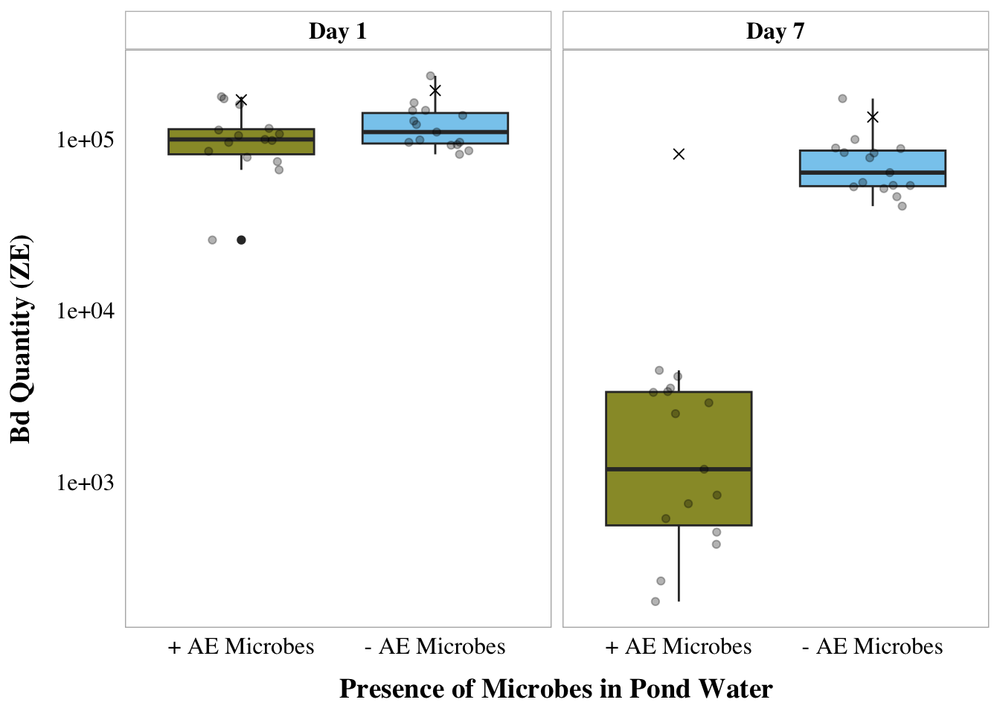
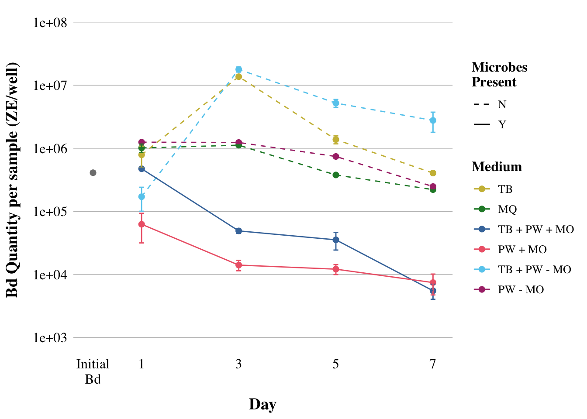
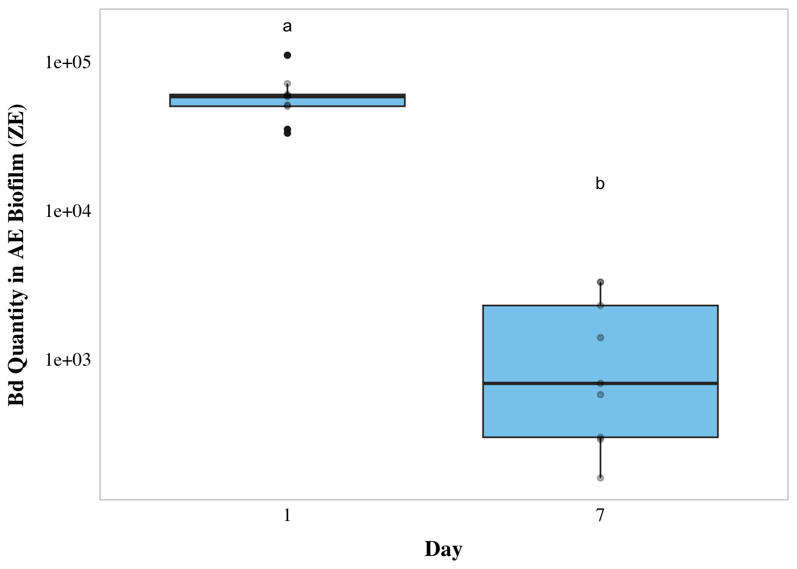
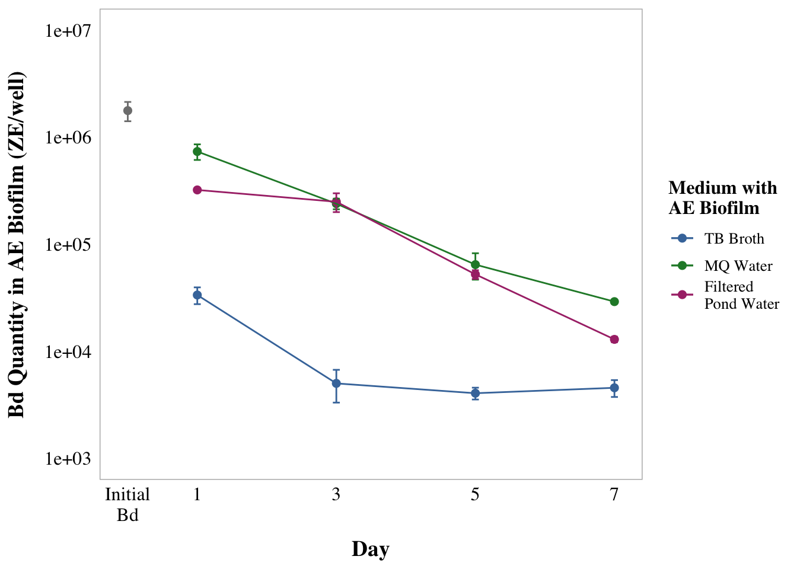
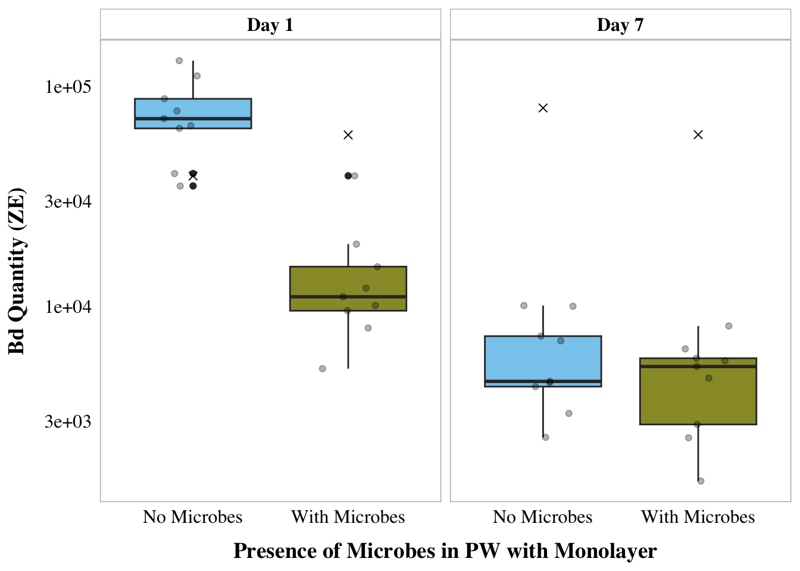
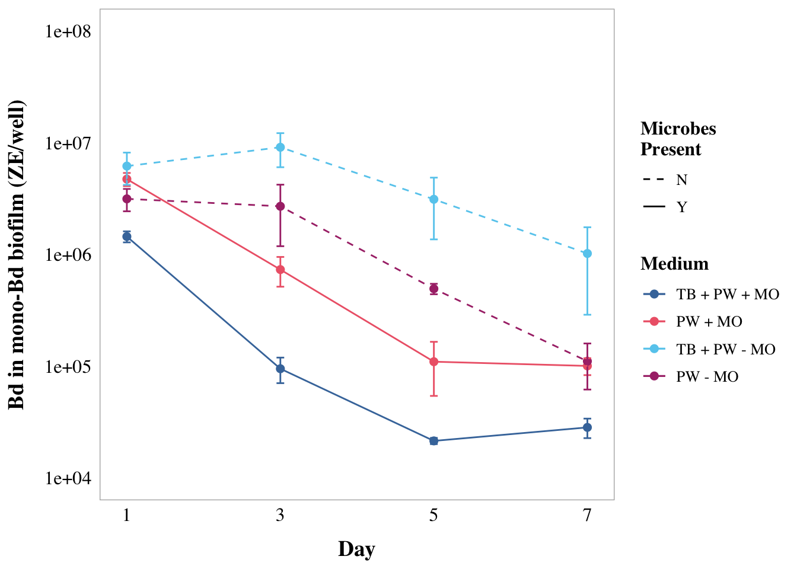

## read in and clean datalibrary(tidyverse) # for cleaning and viewing datalibrary(here) # for importing datalibrary(patchwork) # combining plotsfig_2b_raw <-read.csv(here("data", "final_NCOS_2024_reformatted_for_R.xlsx - Fig2B.csv"))fig_3b_raw <-read.csv(here("data", "final_NCOS_2024_reformatted_for_R.xlsx - Fig3B.csv"))fig_4b_raw <-read.csv(here("data", "final_NCOS_2024_reformatted_for_R.xlsx - Fig4B.csv"))# set up custom thememyCustomTheme <-function() {theme_light() +theme(axis.text =element_text(size =12, family ="Times", color ="black"),axis.title.x =element_text(margin =margin(t =10), size =14, face ="bold", family ="Times", color ="black"), # Add space between x-axis label and axisaxis.title.y =element_text(margin =margin(r =10), size =14, face ="bold", family ="Times", color ="black"), # Add space between y-axis label and axistitle =element_text(size =12, face ="bold", family ="Times"),plot.caption =element_text(size =10, face ="italic", family ="Times"),legend.text =element_text(size =10, family ="Times"), # Increase legend text sizepanel.grid.major.x =element_blank(), # Remove major vertical grid linespanel.grid.minor.x =element_blank(), # Remove minor vertical grid linespanel.grid.major.y =element_blank(), # Remove major horizontal grid linespanel.grid.minor.y =element_blank(), # Remove minor horizontal grid linesstrip.text =element_text(size =12, face ="bold", family ="Times", color ="black"), # Set strip text stylestrip.background =element_rect(fill ="white", color ="grey"), # Set strip background to white, # color = "black"axis.ticks =element_blank() # Remove x and y axis ticks )}ns_biofilm_bd <-read.csv(here("data", "nine-sites-biofilm-on-Bd - Sheet1.csv"))fs_pw_bd <-read.csv(here("data", "fifteen-sites-PW-on-Bd - Sheet1.csv"))ns_ml_pw_bd <-read.csv(here("data", "nine-sites-PW-on-MLBd - Sheet1.csv")) %>%filter(site !="NORTH")
Fig 2A: water microbes
Code
# remove controlspartI <- fs_pw_bd %>%filter(site !="sterile MQ")# keep control for labeling plotpartI_controls <- fs_pw_bd %>%filter(site =="sterile MQ") %>%pivot_wider(names_from = bd_location, values_from = bd_qty) %>%mutate(combined_bd = adherent + floating) %>%mutate(day =case_when( day ==1~"Day_1", day ==7~"Day_7"))# data type cleaningpartI$bd_location <-factor(partI$bd_location, levels =c("floating", "adherent"))partI$filter <-factor(partI$filter,levels =c("40um_filter", "0.22um_filter"))partI$day <-factor(partI$day, levels =c("1", "7"),labels =c("Day_1", "Day_7"))partI$site <-factor(partI$site,levels =c("BARN", "CABIN", "NORTH", "GRAMPS", "WEST", "GDPND004", "GDPND005", "GDPND006", "GDPND008", "GDPND009", "PRPND002", "PRPND003", "PRPND004", "PRPND009", "PRPND010", "sterile MQ"))# get the total difference across days by combining both locations of Bd then subtracting across dayspartI_total_diff <- partI %>%# combine floating and adherent for total_Bdpivot_wider(names_from = bd_location, values_from = bd_qty) %>%mutate(combined_bd = adherent + floating) %>%subset(select =-c(adherent,floating)) %>%# different metrics of difference in Bdpivot_wider(names_from = day, values_from = combined_bd) %>%# calculate the rate loss by taking the log of each before subtractingmutate(rate_loss =log(Day_1) -log(Day_7)) %>%# calculate the difference in raw amount of Bdmutate(diff = Day_1 - Day_7)# Split into 2 data frames one for 40 and one for .22partI_total_diff_40um <- partI_total_diff %>%filter(filter =="40um_filter")partI_total_diff.22um <- partI_total_diff%>%filter(filter =="0.22um_filter")# Colors: these are from Paul Tol's colorblind friendly palettewith_microbes_40_color <-"#999933"no_microbes_.22_color <-"#88ccee"fig_2a <- partI %>%# combine floating and adherent for total_Bdpivot_wider(names_from = bd_location, values_from = bd_qty) %>%mutate(combined_bd = adherent + floating) %>%# create the plotggplot(aes(y= combined_bd, x = filter, fill = filter)) +geom_boxplot() +geom_jitter(width =0.2, alpha =0.3) +scale_y_log10() +facet_wrap(~day, labeller =labeller(day =c("Day_1"="Day 1","Day_7"="Day 7")))+scale_fill_manual(values =c("40um_filter"= with_microbes_40_color, "0.22um_filter"= no_microbes_.22_color)) +myCustomTheme() +theme(legend.position ="none",strip.text =element_text(face="bold"),axis.title =element_text(face ="bold")) +scale_x_discrete (labels=c("40um_filter"="+ AE Microbes", "0.22um_filter"="- AE Microbes")) +xlab("Presence of Microbes in Pond Water") +ylab("Bd Quantity (ZE)") +# add controls ad x'sgeom_point(data = partI_controls, aes(x = filter, y = combined_bd), shape =4, size =2)fig_2a

Fig 2B: water microbes
Code
## 2Bpw <- fig_2b_raw %>%# add column for microbes or nomutate(microbes =case_when(str_detect(sample_ID, "\\+microorganism") ~"y",TRUE~"n" )) %>%# # add column for water_treatmentmutate(water_treatment =case_when( sample_ID %in%c("1%TB", "MQ", "Added Bd") ~"sterile-water", sample_ID %in%c("1%TB+PW+microorganism", "PW+microorganism") ~"PW+MO", sample_ID %in%c("1%TB+PW-microorganism", "PW-microorganism") ~"PW-MO" )) %>%# add column for TB or nomutate(TB =case_when(str_detect(sample_ID, "TB") ~"y",TRUE~"n" ))pw_summary <- pw %>%group_by(day, sample_ID) %>%reframe(mean =mean(adh_plus_sup), # calculate the meann =length(adh_plus_sup), # count the number of observationsdf = n -1, # calculate the degrees of freedomsd =sd(adh_plus_sup), # calculate the standard deviationse = sd/sqrt(n), # calculate the standard error ) %>%mutate(microbes =case_when(str_detect(sample_ID, "\\+microorganism") ~"y",TRUE~"n")) %>%# add column for TB or nomutate(TB =case_when(str_detect(sample_ID, "TB") ~"y", TRUE~"n")) %>%# add column for PW or nomutate(water_treatment =case_when( sample_ID %in%c("1%TB", "MQ", "Added Bd") ~"sterile-water", sample_ID %in%c("1%TB+PW+microorganism", "PW+microorganism") ~"PW+MO", sample_ID %in%c("1%TB+PW-microorganism", "PW-microorganism") ~"PW-MO" ))fig_2b <- pw_summary %>%# reorder to match Renwei's plotmutate(sample_ID =factor(sample_ID, levels =c("1%TB", "MQ", "1%TB+PW+microorganism", "PW+microorganism", "1%TB+PW-microorganism", "PW-microorganism", "Added Bd"))) %>%ggplot(aes(x = day, y = mean, color = sample_ID)) +geom_point(size =2) +geom_errorbar(aes(ymin = mean - se, # plot the standard errorymax = mean + se),width =0.1) +scale_y_log10(limits =c(1e3, 1e8), breaks =c(1e3, 1e4, 1e5, 1e6, 1e7, 1e8)) +# vibes# vibeslabs(x ="Day",y ="Bd Quantity per sample (ZE/well)",color ="Medium", # Title for color legendlinetype ="Microbes\nPresent"# Title for linetype legend ) +scale_color_manual(values =c("1%TB"="#CCBB44", "MQ"="#228833", "1%TB+PW+microorganism"="#4477AA", "PW+microorganism"="#EE6677", "1%TB+PW-microorganism"="#66CCEE",#"Added Bd" = "#BBBBBB" # removed bc not really a medium"PW-microorganism"="#AA3377"), # Assign specific colors to match RC's plotlabels =c("1%TB"="TB","MQ"="MQ","1%TB+PW+microorganism"="TB + PW + MO","PW+microorganism"="PW + MO","1%TB+PW-microorganism"="TB + PW - MO","PW-microorganism"="PW - MO","Added Bd"="Initial Bd")) +# Custom labels for the color legendgeom_line(aes(linetype = microbes)) +scale_linetype_manual(values =c("n"="dashed", "y"="solid"),labels =c("n"="N", "y"="Y")) +# Change labels to uppercase N and YmyCustomTheme()+scale_x_continuous(breaks =c(0, 1, 3, 5, 7),labels =c("Initial\nBd", "1", "3", "5", "7")) +theme(legend.position ="right",panel.grid.major.y =element_line(color ="grey"), # Add major y grid linespanel.border =element_blank()) fig_2b

Fig 2 combined
Code
# Combine fig_2a and fig_2b side by sidefig2 <- fig_2a + fig_2b +plot_layout(widths =c(1, 1)) +# Ensure equal widths for both plotsplot_annotation(tag_levels ='A') # Adds "A" and "B" to the upper cornersfig2
part_two <- ns_biofilm_bd#---- Part II# set as factors with levels so they appear in order in plots laterpart_two$site <-factor(part_two$site,levels =c("CABIN", "GRAMPS", "WEST", "GDPND005", "GDPND006", "GDPND009", "PRPND004", "PRPND009", "PRPND010"))part_two$bd_location <-factor(part_two$bd_location, levels =c("supernatant", "biofilm"))part_two$day <-factor(part_two$day, levels =c("Day_0", "Day_1", "Day_7"))# Biofilm only, no supernatant, and days 1 and 7 only, no day 0part_two_bf_only <- part_two %>%filter(bd_location =="biofilm") %>%filter(day !="Day_0") %>%#log bd qtymutate(log_qty =log(bd_qty))part2 <- part_two_bf_only %>%ggplot(aes(y= bd_qty, x = day)) +geom_boxplot(fill = no_microbes_.22_color) +geom_point(alpha =0.3) +myCustomTheme() +scale_y_log10() +theme(legend.position ="none",strip.text =element_text(face="bold"),axis.title =element_text(face ="bold")) +xlab("Day") +ylab("Bd Quantity in AE Biofilm (ZE)") +scale_x_discrete (labels=c("Day_1"="1", "Day_7"="7"))# Let's add significance letterssignificance_data <-tibble(day =factor(c("Day_1", "Day_7"), levels =c("Day_1", "Day_7")),y_position =c(1.6e+05, 1.4e+04), # Adjust this depending on your plot's scalelabel =c("a", "b"))fig_3a <- part2 +geom_text(data = significance_data, aes(x = day, y = y_position, label = label),position =position_dodge(width =0.75), vjust =0) fig_3a

Fig 3B: AE Biofilm
Code
## aquatic environmental biofilm (4b but I think its supposed to be 3b)# add column for microbes or noae <- fig_3b_raw %>%rename(sample_ID = Adherent.sample.ID) %>%# add columns for components y/n# add column for TB or nomutate(TB =case_when(str_detect(sample_ID, "TB") ~"y",TRUE~"n" )) %>%# add column for PW or nomutate(PW =case_when(str_detect(sample_ID, "PW") ~"y",TRUE~"n" ))ae_summary <- ae %>%group_by(day, sample_ID) %>%reframe(mean =mean(adh), # calculate the meann =length(adh), # count the number of observationsdf = n -1, # calculate the degrees of freedomsd =sd(adh), # calculate the standard deviationse = sd/sqrt(n), # calculate the standard error ) %>%# add column for TB or nomutate(TB =case_when(str_detect(sample_ID, "TB") ~"y", TRUE~"n")) %>%# add column for PW or nomutate(PW =case_when(str_detect(sample_ID, "PW") ~"y", TRUE~"n"))fig_3b <- ae_summary %>%# reorder to match Renwei's plotmutate(sample_ID =factor(sample_ID,levels =c("1%TB+AEbiofilm", "MQ+AEbiofilm","PW+AEBiofilm", "Added Bd" ))) %>%ggplot(aes(x = day,y = mean,color = sample_ID)) +geom_point(size =2) +geom_errorbar(aes(ymin = mean - se, # plot the standard errorymax = mean + se),width =0.1) +geom_line() +scale_y_log10(limits =c(1e3, 1e7),breaks =c(1e3, 1e4, 1e5, 1e6, 1e7)) +# vibeslabs(x ="Day",y ="Bd Quantity in AE Biofilm (ZE/well)",color ="Medium with\nAE Biofilm")+# Title for color legendscale_color_manual(values =c("1%TB+AEbiofilm"="#4477AA","MQ+AEbiofilm"="#228833",#"Added Bd" = "darkgrey","PW+AEBiofilm"="#AA3377"),labels =c("1%TB+AEbiofilm"="TB Broth","MQ+AEbiofilm"="MQ Water","PW+AEBiofilm"="Filtered\nPond Water","Added Bd"="Initial Bd")) +# Custom labelsmyCustomTheme()+scale_x_continuous(breaks =c(0, 1, 3, 5, 7),labels =c("Initial\nBd", "1", "3", "5", "7"))fig_3b

Fig 3 combined
Code
# Combine fig_2a and fig_2b side by sidefig3 <- fig_3a + fig_3b +plot_layout(widths =c(1, 1)) +# Ensure equal widths for both plotsplot_annotation(tag_levels ='A') # Adds "A" and "B" to the upper cornersfig3
part_three <- ns_ml_pw_bd %>%filter(filter !="control") %>%filter(site !="MQ")# keep control for labeling plotpartIII_controls <- ns_ml_pw_bd %>%filter(site =="MQ") %>%pivot_wider(names_from = bd_location, values_from = bd_qty) %>%mutate(combined_bd = adherent + supernatant)# Data type cleaningpart_three$site <-factor(part_three$site,levels =c("CABIN", "GRAMPS", "WEST", "GDPND005", "GDPND006", "GDPND009", "PRPND004", "PRPND009", "PRPND010"))part_three$bd_location <-factor(part_three$bd_location, levels =c("supernatant", "adherent"))part_three$day <-factor(part_three$day, levels =c("Day_1", "Day_7")) # get the total difference across days by combining both locations of Bd then subtracting across dayspart_three_total_diff <- part_three %>%# combine supernatant and adherent for total_Bdpivot_wider(names_from = bd_location, values_from = bd_qty) %>%mutate(combined_bd = adherent + supernatant) %>%subset(select =-c(adherent,supernatant)) %>%# different metrics of difference in Bdpivot_wider(names_from = day, values_from = combined_bd) %>%# calculate the difference in raw amount of Bdmutate(diff = Day_1 - Day_7) %>%# calculate the rate loss by taking the log of each before subtractingmutate(rate_loss =log(Day_1) -log(Day_7))# Step 2: create subsets for each treatmentpart_three_total_diff_40um <- part_three_total_diff %>%filter(filter =="40um_filter")part_three_total_diff.22um <- part_three_total_diff %>%filter(filter =="0.22um_filter")fig_4a <- part_three %>%# combine floating and adherent for total_Bdpivot_wider(names_from = bd_location, values_from = bd_qty) %>%mutate(combined_bd = adherent + supernatant) %>%# plot itggplot(aes(y= combined_bd, x = filter, fill = filter)) +geom_boxplot() +geom_jitter(width =0.2, alpha =0.3) +scale_y_log10() +facet_wrap(~day, labeller =labeller(day =c("Day_1"="Day 1","Day_7"="Day 7")))+scale_fill_manual(values =c("40um_filter"= with_microbes_40_color, "0.22um_filter"= no_microbes_.22_color)) +myCustomTheme()+theme(legend.position ="none",strip.text =element_text(face="bold"),axis.title =element_text(face ="bold")) +scale_x_discrete (labels=c("40um_filter"="With Microbes", "0.22um_filter"="No Microbes")) +xlab("Presence of Microbes in PW with Monolayer") +ylab("Bd Quantity (ZE)") +# add controls ad x'sgeom_point(data = partIII_controls, aes(x = filter, y = combined_bd), shape =4, size =2)fig_4a

Fig 4B: Monolayer biofilm
Code
## Monolayer (3b but I think its supposed tobe 4b)# add column for microbes or nomonolayer <- fig_4b_raw %>%rename(sample_ID = sample.ID) %>%rename(adh_plus_sup = ahd_plus_sup) %>%# rename sample_id to only include treatment, not daymutate(sample_ID =str_replace(sample_ID, "-D[0-9]+$", "")) %>%# add columns for components y/nmutate(microbes =case_when(str_detect(sample_ID, "\\+microbes") ~"y",TRUE~"n" )) %>%# add column for TB or nomutate(TB =case_when(str_detect(sample_ID, "TB") ~"y",TRUE~"n" )) %>%# add column for PW or nomutate(PW =case_when(str_detect(sample_ID, "PW") ~"y",TRUE~"n" ))monolayer_summary <- monolayer %>%group_by(day, sample_ID) %>%reframe(mean =mean(adh_plus_sup), # calculate the meann =length(adh_plus_sup), # count the number of observationsdf = n -1, # calculate the degrees of freedomsd =sd(adh_plus_sup), # calculate the standard deviationse = sd/sqrt(n), # calculate the standard error ) %>%mutate(microbes =case_when(str_detect(sample_ID, "\\+microbes") ~"y",TRUE~"n")) %>%# add column for TB or nomutate(TB =case_when(str_detect(sample_ID, "TB") ~"y", TRUE~"n")) %>%# add column for PW or nomutate(PW =case_when(str_detect(sample_ID, "PW") ~"y", TRUE~"n")) fig_4b <- monolayer_summary %>%# reorder to match Renwei's plotmutate(sample_ID =factor(sample_ID, levels =c("TB+PW+microbes","PW+microbes","TB+PW-microbes", "PW-microbes"))) %>%ggplot(aes(x = day, y = mean, color = sample_ID)) +geom_point(size =2) +geom_errorbar(aes(ymin = mean - se, # plot the standard errorymax = mean + se),width =0.1) +geom_line(aes(linetype = microbes)) +scale_y_log10(limits =c(1e4, 1e8), breaks =c(1e4, 1e5, 1e6, 1e7, 1e8)) +# vibeslabs(x ="Day",y ="Bd in mono-Bd biofilm (ZE/well)",color ="Medium", # Title for color legendlinetype ="Microbes\nPresent") +scale_color_manual(values =c("TB+PW+microbes"="#4477AA", "PW+microbes"="#EE6677", "TB+PW-microbes"="#66CCEE", "PW-microbes"="#AA3377"), labels =c("TB+PW+microbes"="TB + PW + MO","PW+microbes"="PW + MO","TB+PW-microbes"="TB + PW - MO","PW-microbes"="PW - MO")) +# Custom labelsmyCustomTheme()+scale_linetype_manual(values =c("n"="dashed", "y"="solid"),labels =c("n"="N", "y"="Y")) +# Change labels to uppercase N and Yscale_x_continuous(breaks =c(0, 1, 3, 5, 7),labels =c("Initial\nBd", "1", "3", "5", "7"))fig_4b

Fig 4 combined
Code
# Combine fig_2a and fig_2b side by sidefig4 <- fig_4a + fig_4b +plot_layout(widths =c(1, 1)) +# Ensure equal widths for both plotsplot_annotation(tag_levels ='A') # Adds "A" and "B" to the upper cornersfig4